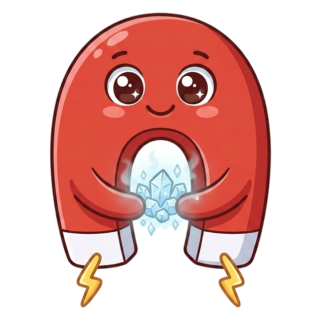
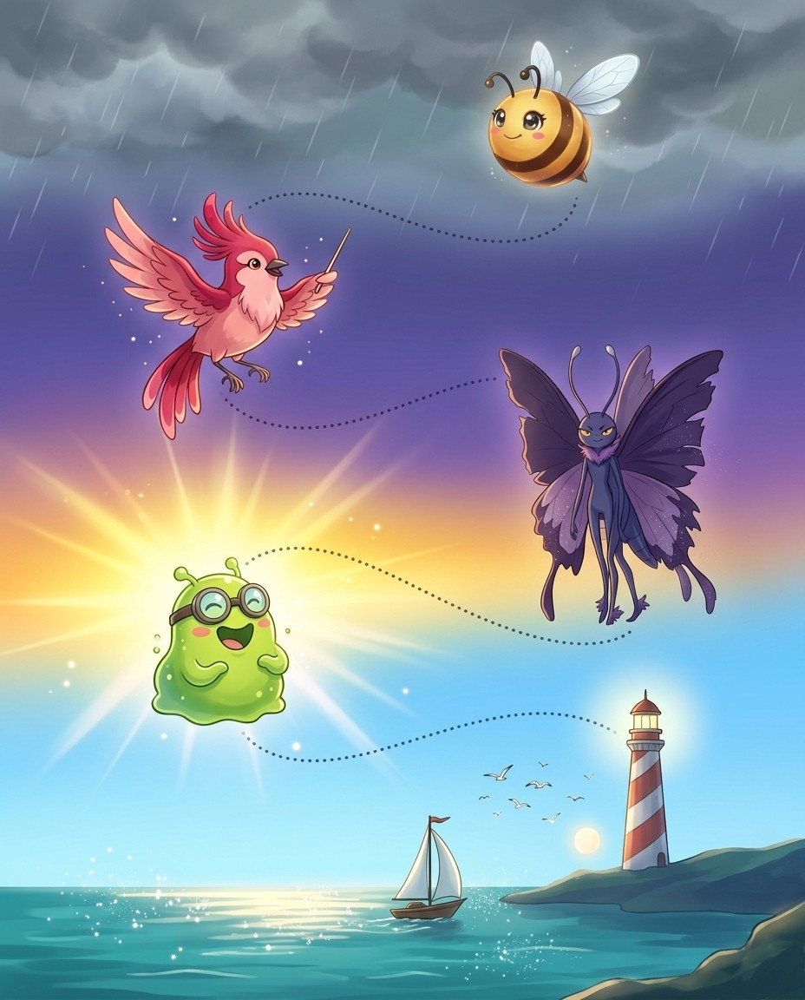
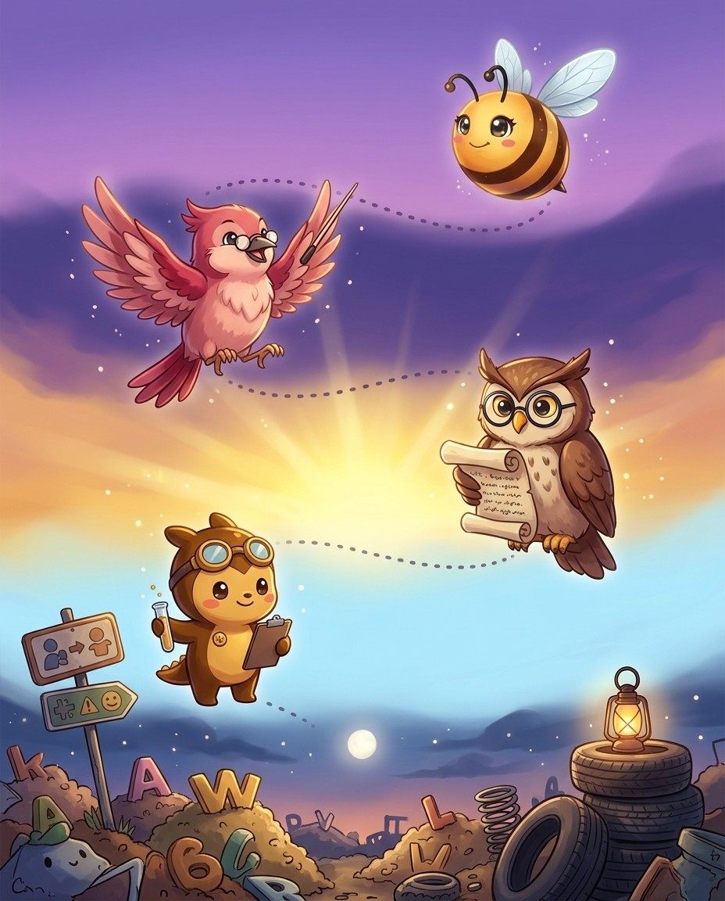
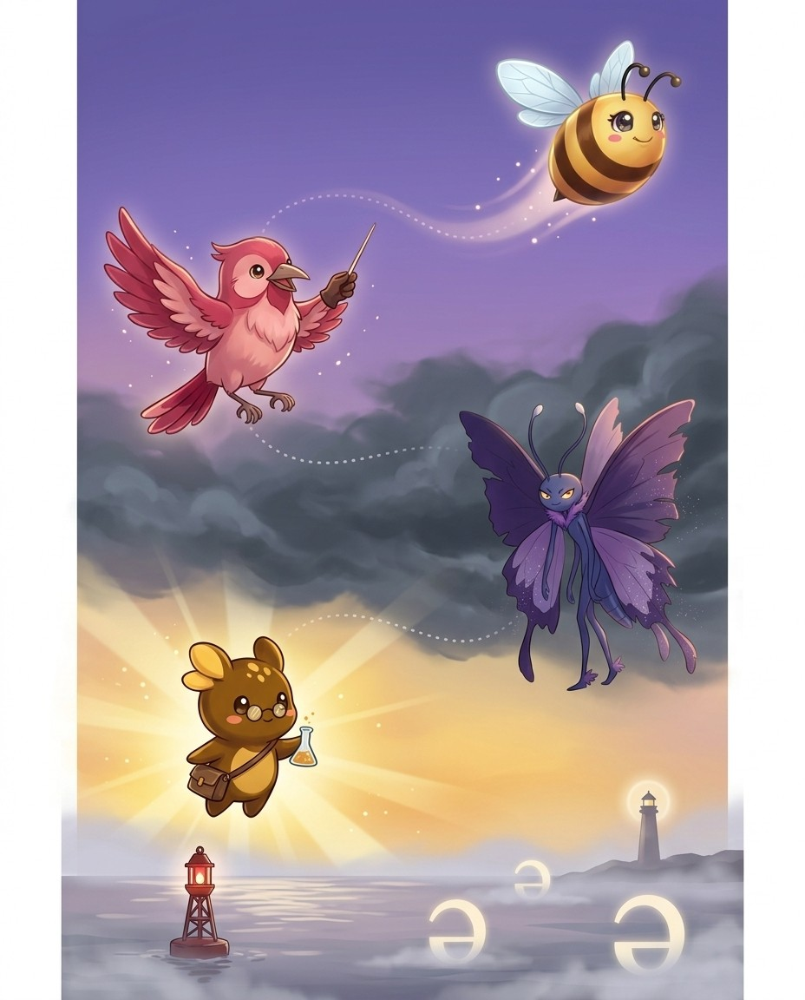

9 chapters220 practice wordsquizzes & puzzles throughout
Bizzy & Maestro in the Engine Room The Engine Room again, belts humming — this is where English bolts words together.
The Word FactoryHow this book works
Five moves. That's the whole system.
I'm Maestro. How English bolts words together. Nothing in this book is filler — if a page is here, a real speller lost a real word without it.
1
Read the story
Each chapter opens as a storyboard. Vex sets the trap; the crew talks you out of it.
2
Steal the pro move
The dark box is how a champion thinks on stage. It works on brand-new words too.
3
Spell out loud, then write
Say it, spell it aloud, write it. The order matters — it is how the stage will ask for it.
4
Pass the checkpoint
The same questions the app gates this chapter with — at 90%. Circle, then verify at the back.
5
Play the puzzle, hunt the Big List
Every chapter ends in a game built from its own words, and the back holds every word in the book. Circle what you own.
🔊 Grown-ups: every chapter is narrated, and every word recorded, in the Bizzing Bee app
Bizzing Bee · The Word Factory1
The Word FactoryThe cast
Bizzy — and this book's guide, Maestro
The crew of Vol. 16
The ensemble for this volume. They host the drills and checkpoints; the work is still yours.
Bizzy — The little bee who spells the world back together, one petal at a time. · Maestro — One wave of the baton and the whole show begins.
Atom
OVR 62
Speller of the Lab
Small but the building block of everything.
Phoenix Flame
OVR 76
Champion of the Lab
Rises brighter from every mistake.
Germy
OVR 63
Speller of the Lab
The tiny troublemaker soap sends packing.
Brainiac
OVR 68
Champion of the Lab
Confidence: 100%. Knows a word for everything.
Scopey
OVR 82
Champion of the Lab
Sees the tiny details everyone else misses.

Magneto Max
OVR 61
Speller of the Lab
Max pulls the right answer straight to him.
Robo Helper
OVR 68
Speller of the Lab
Beep-boop — always ready to help you spell.
Aurum Formula
OVR 88
Grandmaster of the Lab
The golden formula, rarest in the Lab.
And the other one
Vex, the word-moth. Every trap in this book is one it has watched a speller fall into on a real stage.
Bizzing Bee · The Word Factory2
WELCOME TO
The Engine Room
The Engine Room again, belts humming — this is where English bolts words together.
Bizzing Bee · The Word Factory3
1How Words Are Built · the Engine RoomAssimilation — why prefixes change their last letter
BizzyYour general course taught you that a d changes shape before different letters. What it did not…
MaestroLatin speakers did what all speakers do — they took the easy path. Saying in possible is…
AtomHere is the payoff. Accommodate is a d plus commodus. The prefix a d becomes a c…
ScopeyFour prefixes do most of the work. I n becomes i m, i l or i r.…
🔊 narrated in the appturn the page — the whole trick, explained →
4
Chapter 1 · Assimilation — why prefixes change their last…The idea · ★★★
The big idea
The general course teaches this for ad- alone, but the same machinery governs every Latin prefix, and it explains most of the doubled letters in English. When a prefix ending in a consonant meets a root starting with a different one, Latin reshaped the prefix's final letter to match — and the result is two identical l…
The pro move
IMMARCESCIBLE
Heard. im-ar-SESS-ih-bul — unfading
Parse. in- (not) + marcescere (to wither) + -ible
Assimilation. in- before m becomes im-, so the two m letters are prefix plus root
Spell. I M M A R C E S C I B L E
Family. marcescent — withering, from the same root
The four families
in- meaning not or into becomes im- before b, m, p (impossible, immature), il- before l (illegible, illuminate), ir- before r (irregular, irascible). sub- becomes suc- suf- sug- sup- sur- (…
This is where doubled letters come from
Almost every awkward double in a Latin-derived word is a prefix meeting a root. Accommodate is ad plus commodus, so the double c is the assimilated prefix and the double m belongs to the ro…
Vex alert
A prefix reshapes its final consonant to match what follows. in- becomes im- il- ir…
Sound trap
immanent sounds like imminent — at the mic, always ask for the meaning.
Check yourself
Book closed: immarcescible · surreptitious · accommodate, out loud, full words. At this level, almost right is still an elimination.
The Word Map gates this stop at 90%. That is five of six, minimum. Circle and verify. Germy's power is Endless Engine — borrow it.
1. Which of these is the big idea of “Assimilation — why prefixes change their last letter”?
AThe general course teaches this for ad- alone, but the same machinery governs every…
BKnowing eight loanword groups is not the same as being able to use them.
CMalay was the trade language of the whole East Indies, so English took its Southeas…
DLatin had a whole verb class for beginning to be something: -escere, called the inc…
2. Which word belongs to this chapter's family?
Aimmarcescible
Berubescent
Ccaboose
Dparadigm
3. The card “The four families” says…
AThis is the single most useful structural insight in the course, because it turns s…
BAlmost every awkward double in a Latin-derived word is a prefix meeting a root. Acc…
Cin- meaning not or into becomes im- before b, m, p (impossible, immature), il- befo…
DThe prefix only assimilates when it has to. Before a vowel it stays whole: adapt, a…
4. “A prefix reshapes its final consonant to match what follows. in- becomes im- il- ir-, sub- becomes suc- suf- sug-, ad- becomes ac- af- ag- al- ap- ar-” — which word is this hook about?
Asurreptitious
Baccommodate
Cimmarcescible
Dalliteration
Dictation round
Hand this page to anyone nearby. They read the words from the answer key (Ch. 1 dictation, at the back) — you write, no peeking.
9. use of the same consonant at the beginning of each stressed syllable in a l…
Down
1. establish or strengthen as with new evidence or facts
3. is to do a kindness or a favor to oblige
4. is hard to read or decipher because of poor handwriting
7. make lighter or brighter
8. kill in large numbers
💬
Bee Break · someone said it better
“I took the one less traveled by,
And that has made all the difference.”
— Robert Frost, from 'The Road Not Taken'
Bizzing Bee · The Word Factory10
2How Words Are Built · the Paper MountainsStacking combining forms — how the longest words are …
BizzyThe longest words in your library are not harder than the short ones. They are just longer.…
MaestroHere is the habit to build. Do not start writing at the first letter. Break the word…
Phoenix FlameTake the longest word in your library. Pneumonoultramicroscopicsilicovolcanoconiosis. Break it. Pneumon, lung. Ultra, beyond. Microscopic, tiny. Silico,…
Magneto MaxThe connecting vowel is decided by the language of the pieces. Greek compounds join with o —…
🔊 narrated in the appturn the page — the whole trick, explained →
11
Chapter 2 · Stacking combining forms — how the longest wo…The idea · ★★★
The big idea
The longest words in the library are not harder than short ones; they are just longer. They are chains of combining forms, each with a fixed spelling, joined by a connecting vowel — o for Greek, i for Latin. The entire skill is finding the joints. Once a word is broken at its joints, you are spelling six familiar piec…
The pro move
OTORHINOLARYNGOLOGY
Heard. oh-toh-rye-noh-lar-in-GOL-uh-jee
Joints. ot / o / rhin / o / laryng / o / logy
Parts. ous ear, rhis nose, larynx throat, logos study
Spell. O T O R H I N O L A R Y N G O L O G Y
Family. otology, rhinoplasty, laryngitis — every piece reappears
Find the joints first
Never spell a long word left to right. Break it at the connecting vowels first. Otorhinolaryngology becomes ot-o-rhin-o-laryng-o-logy: ear, nose, throat, study. Electroencephalogram becomes…
Greek joins with o, Latin with i
This is the rule that decides the connectors. Greek compounds use o: ochlocracy, myrmecophagy, thermometer, dendrochronology. Latin compounds use i: fossiliferous, cupriferous, insecticide,…
Vex alert
Long scientific words are chains of morphemes, not memorised strings. Greek joins w…
Check yourself
Book closed: pneumonoultramicroscopicsilicovolcanoconiosis · hippopotomonstrosesquippedaliophobia · floccinaucinihilipilification, out loud, full words. At this level, almost right is still an elimination.
Bizzing Bee · The Word Factory12
Chapter 2 · Stacking combining forms — how the longest wo…Practice · ★★★
hook: Long scientific words are chains of morphemes, not memorised strings.…
Mr. Ortiz accused the class of ▁▁▁ when every book report suddenly sp…
Bizzing Bee · The Word Factory14
Chapter 2 · Stacking combining forms — how the longest wo…Rapid round · ★★★
More ammo — one line each.
dendrochronology/deh-ndroh-kruh-NAH-luh-jee/ the science of dating events and variations in …
trichotillomania/trik-oh-til-oh-MAY-nee-uh/ an irresistible urge to pull out your own hair
radioimmunoassay/ray-dee-oh-ih-myoo-noh-AS-ay/ immunoassay of a substance that has been radioa…
zenzizenzizenzic/zen-zee-zen-zee-ZEN-zik/ the eighth power of a number, in old arithmetic…
Lock them in
Pick 4 words from above. Say each one as you write it — three times, no shortcuts. The third copy is the one your hand remembers.
Bizzing Bee · The Word Factory15
Chapter 2 · Stacking combining forms — how the longest wo…Checkpoint · ★★★
Brainiac · Champion of the Lab runs the checkpoint
Do you own the idea?
The Word Map gates this stop at 90%. That is five of six, minimum. Circle and verify. Brainiac's power is Blink Step — borrow it.
1. Which of these is the big idea of “Stacking combining forms — how the longest words are built”?
AKnowing eight loanword groups is not the same as being able to use them.
BMalay was the trade language of the whole East Indies, so English took its Southeas…
CThe longest words in the library are not harder than short ones; they are just long…
DLatin had a whole verb class for beginning to be something: -escere, called the inc…
2. Which word belongs to this chapter's family?
Aparadigm
Berubescent
Cpneumonoultramicroscopicsilicovolcanoconiosis
Dcaboose
3. The card “Find the joints first” says…
AThis is the rule that decides the connectors. Greek compounds use o: ochlocracy, my…
BThe reason this is worth practising is reuse. Learn cephal, head, and you have ceph…
CNever spell a long word left to right. Break it at the connecting vowels first. Oto…
DPneumonoultramicroscopicsilicovolcanoconiosis is pneumon-o-ultra-microscopic-silic-…
4. “Long scientific words are chains of morphemes, not memorised strings. Greek joins with o, Latin with i. Find the joints and a 45-letter word becomes s” — which word is this hook about?
Apneumonoultramicroscopicsilicovolcanoconiosis
Bfloccinaucinihilipilification
Chonorificabilitudinitatibus
Dhippopotomonstrosesquippedaliophobia
Dictation round
Hand this page to anyone nearby. They read the words from the answer key (Ch. 2 dictation, at the back) — you write, no peeking.
1.
2.
Bizzing Bee · The Word Factory16
Chapter 2 · Stacking combining forms — how the longest wo…Game · ★★★
Germy's puzzle page
Scramble & rescue
I own this
Unscramble
Rescue the vowels
✨
Bee Break · simile of the page
sweat like a pig
to sweat heavily
Bizzing Bee · The Word Factory17

3How Words Are Built · the Wide StraitHyphens, spaces and closed compounds
VexStart with the thing that actually loses words on stage. A hyphen is not punctuation you can…
MaestroThe most reliable rule. When English borrows a whole phrase from another language, it keeps the punctuation…
GermyHsaing waing is a Burmese orchestra, and it is in your word list. H s a i…
Robo HelperOne prefix you can count on completely. Self always takes a hyphen. Self conscious. Self portrait. Self…
🔊 narrated in the appturn the page — the whole trick, explained →
18
Chapter 3 · Hyphens, spaces and closed compoundsThe idea · ★★★
The big idea
On a bee stage a hyphen is a letter: you have to say it, and getting it wrong loses the word. The rules are conventional rather than logical, but they are learnable. Borrowed French and Italian phrases keep the hyphens they arrived with. The prefix self- always takes one. English compounds tend to start open, become h…
The pro move
MILLE-FEUILLE
Heard. meel-FOY — a layered pastry
Origin. French mille feuilles, a thousand leaves
Rule. a borrowed French phrase keeps its hyphen; you must say hyphen aloud
Spell. M I L L E hyphen F E U I L L E
Family. porte-monnaie, carton-pierre — same rule
Say the hyphen
This is the practical point that matters most. At the microphone you spell a hyphenated word by naming it: m-i-l-l-e-hyphen-f-e-u-i-l-l-e. If you run the letters together without saying hyp…
Borrowed phrases keep their hyphens
French and Italian phrases that entered English as units keep the punctuation they came with. Porte-monnaie, mille-feuille, carton-pierre, loup-garou, cul-de-sac, avant-gardism, mezzo-sopra…
Vex alert
You must say the hyphen out loud. French phrase borrowings keep their hyphens; Engl…
Check yourself
Book closed: self-conscious · absent-minded · avant-gardism, out loud, full words. At this level, almost right is still an elimination.
Bizzing Bee · The Word Factory19
Chapter 3 · Hyphens, spaces and closed compoundsPractice · ★★★
Say it. Spell it out loud. Write it.
🔊 every word has real audio in the app
self-conscious
/ S EH2 L F K AA1 N SH AH0 S / · /ˈsˌɛˌlˌfˌkˌææˌnˌʃˌɑˌs/
aware of yourself as an individual or of your own being and actions and t…
hook: You must say the hyphen out loud. French phrase borrowings keep their…
Feeling ▁▁▁ about her braces, she smiled shyly until her friends smiled …
absent-minded
/ AB-snt-MYN-did / · /ˈæbsntˌmaɪndɪd/
Tending to forget things or not pay attention to what is happening around…
hook: You must say the hyphen out loud. French phrase borrowings keep their…
The ▁▁▁ professor walked into class still wearing his pajama top.
avant-gardism
/ ah-vahn-GARD-iz-um / · /ɑvɑnˈɡɑrdɪzʌm/
The philosophy or practice of supporting and creating avant-garde art, id…
hook: You must say the hyphen out loud. French phrase borrowings keep their…
Her professor wrote his thesis on ▁▁▁ in 1920s Paris, where artists const…
porte-monnaie
/ port-moh-NAY / · /pɔrtmoʊˈneɪ/
A small purse or wallet designed specifically for carrying coins; a coin …
hook: You must say the hyphen out loud. French phrase borrowings keep their…
The antique dealer displayed a delicate Victorian ▁▁▁ made of beaded silk…
mezzo-soprano
/ MET-soh-suh-PRAH-noh / · /ˈmɛtsoʊsəˌprɑnoʊ/
a soprano with a voice between soprano and contralto
hook: You must say the hyphen out loud. French phrase borrowings keep their…
The ▁▁▁'s rich, warm voice filled the opera house as she performed the ro…
carton-pierre
/ kar-tohn-PYAIR / · /kɑrtoʊnˈpjɛr/
A type of papier-mâché material made from paper pulp, chalk, and other su…
hook: You must say the hyphen out loud. French phrase borrowings keep their…
The ornate ceiling rosettes in the grand ballroom were crafted from ▁▁▁, …
Bizzing Bee · The Word Factory20
Chapter 3 · Hyphens, spaces and closed compoundsPractice · ★★★
Say it. Spell it out loud. Write it.
🔊 every word has real audio in the app
mille-feuille
/ meel-FOY / · /milˈfɔɪ/
A classic French pastry made of many thin, flaky layers of puff pastry al…
hook: You must say the hyphen out loud. French phrase borrowings keep their…
The French bakery's ▁▁▁ had hundreds of flaky layers stacked with cream a…
privat-docent
/ prih-VAHT-doh-sent / · /prɪˈvɑtdoʊsɛnt/
In European universities, especially in German-speaking countries, an uns…
hook: You must say the hyphen out loud. French phrase borrowings keep their…
The ▁▁▁ lectured at the university without receiving an official salary, …
hsaing-waing
/ SAING-waing / · /ˈsæɪŋwæɪŋ/
A traditional Burmese percussion ensemble centered around a circle of tun…
hook: You must say the hyphen out loud. French phrase borrowings keep their…
The ceremonial procession was led by musicians playing the ▁▁▁, Burma's tr…
loup-garou
/ loo-gah-ROO / · /luɡɑˈru/
a monster able to change appearance from human to wolf and back again
hook: You must say the hyphen out loud. French phrase borrowings keep their…
The villagers bolted their doors at night, terrified that the ▁▁▁ prowling t…
hunky-dory
/ HUNK-ee-DOR-ee / · /ˈhʌnkiˌdɔri/
being satisfactory or in satisfactory condition
hook: You must say the hyphen out loud. French phrase borrowings keep their…
After the repairs were finished, the mechanic assured us that everything was hunky-…
cul-de-sac
/ K AH1 L D IH0 S AE2 K / · /ˈkˌɑˌlˌdˌɪˌsˌæɛˌk/
a passage with access only at one end
hook: You must say the hyphen out loud. French phrase borrowings keep their…
The children played safely in the ▁▁▁ because no through traffic ever came d…
Bizzing Bee · The Word Factory21
Chapter 3 · Hyphens, spaces and closed compoundsCheckpoint · ★★★
Scopey · Champion of the Lab runs the checkpoint
Do you own the idea?
The Word Map gates this stop at 90%. That is five of six, minimum. Circle and verify. Scopey's power is Mind Palace — borrow it.
1. Which of these is the big idea of “Hyphens, spaces and closed compounds”?
AKnowing eight loanword groups is not the same as being able to use them.
BMalay was the trade language of the whole East Indies, so English took its Southeas…
COn a bee stage a hyphen is a letter: you have to say it, and getting it wrong loses…
DLatin had a whole verb class for beginning to be something: -escere, called the inc…
2. Which word belongs to this chapter's family?
Acaboose
Bself-conscious
Cparadigm
Derubescent
3. The card “Say the hyphen” says…
AThis is the practical point that matters most. At the microphone you spell a hyphen…
BThe prefix self- is reliably hyphenated: self-conscious, self-portrait, self-sabota…
CSometimes there is no derivable answer and the dictionary simply rules. In that cas…
DFrench and Italian phrases that entered English as units keep the punctuation they …
4. “You must say the hyphen out loud. French phrase borrowings keep their hyphens; English compounds usually lose them over time; self- always keeps one.” — which word is this hook about?
Aabsent-minded
Bself-conscious
Cavant-gardism
Dporte-monnaie
Dictation round
Hand this page to anyone nearby. They read the words from the answer key (Ch. 3 dictation, at the back) — you write, no peeking.
1.
2.
Bizzing Bee · The Word Factory22
Chapter 3 · Hyphens, spaces and closed compoundsGame · ★★★
Brainiac's puzzle page
Scramble & rescue
I own this
Unscramble
Rescue the vowels
🎈
Bee Break · idiom to drop at dinner
count your chickens before they hatch
to assume success too early
Bizzing Bee · The Word Factory23

4How Words Are Built · the Word JunkyardDoublets — one root, two arrivals, two spellings
BizzyEnglish borrowed from French for six hundred years, and French itself changed during that time. So the…
MaestroThere is a third kind. One form was worn smooth by centuries of ordinary speech, the other…
BrainiacThe same split happened with c. Latin c before an a stayed c in Norman French and…
Aurum FormulaNorthern Norman French kept a Germanic w. Central Parisian French wrote g u instead. English took words…
🔊 narrated in the appturn the page — the whole trick, explained →
24
Chapter 4 · Doublets — one root, two arrivals, two spelli…The idea · ★★★
The big idea
English borrowed from French for six hundred years, and French itself changed during that time — so the same Latin root frequently arrived twice, at different dates, wearing different clothes. These pairs are called doublets, and they explain a great deal that otherwise looks random. Northern Norman French kept a w an…
The pro move
CHATTEL
Heard. CHAT-ul — a movable possession
Doublet. cattle is the same Latin word, capitale, meaning property
Rule. Parisian French turned Latin c into ch, so cattle and chattel split
Spell. C H A T T E L
Family. capital, cattle, chattel — all from capitale
The w and gu pairs
Norman French kept a Germanic w; Parisian French wrote gu instead. So English got both. Ward and guard. Warranty and guarantee. Wile and guile. Warden and guardian. Wallop and gallop. Willi…
The c and ch pairs
Latin c before a became ch in Parisian French and stayed c in Norman. Cattle and chattel, from capitale. Catch and chase, from captiare. Cap and chief and chef, all from caput, a head. Cast…
Vex alert
The same Latin word often entered English twice: once through Norman French with a …
Sound trap
guarantee sounds like guaranty · wile sounds like while — at the mic, always ask for the meaning.
Check yourself
Book closed: chattel · guarantee · warranty, out loud, full words. At this level, almost right is still an elimination.
Bizzing Bee · The Word Factory25
Chapter 4 · Doublets — one root, two arrivals, two spelli…Practice · ★★★
Say it. Spell it out loud. Write it.
🔊 every word has real audio in the app
chattel
/ ch-A-t-uh-l / · /tʃˈætəl/
a movable item of personal property
hook: The same Latin word often entered English twice: once through Norman …
In the historical novel, the characters debate whether a person could ever rightful…
guarantee
/ geh-ruh-NTEE / · /ɡɛrəˈnti/
a written assurance that some product or service will be provided or will…
hook: The same Latin word often entered English twice: once through Norman …
There is no ▁▁▁ that they are not lying.
warranty
/ w-AW-r-uh-n-t-ee / · /wˈɔrənti/
is assurance
hook: The same Latin word often entered English twice: once through Norman …
When the new laptop stopped working after a week, Mom used the ▁▁▁ to get it r…
fragile
/ FRA-juhl / · /ˈfrædʒəl/
easily broken or damaged or destroyed
hook: The same Latin word often entered English twice: once through Norman …
The archaeologist handled the ▁▁▁ pottery shard with two fingers, knowing that …
genteel
/ jehn-TEEL / · /dʒɛnˈtil/
marked by refinement in taste and manners
hook: The same Latin word often entered English twice: once through Norman …
Despite living in a tiny apartment, the elderly woman maintained a ▁▁▁ lifestyl…
tradition
/ truh-DIH-shuhn / · /trəˈdɪʃən/
an inherited pattern of thought or action
hook: The same Latin word often entered English twice: once through Norman …
Lighting candles at dinner was a beloved family ▁▁▁ passed down for four gene…
Bizzing Bee · The Word Factory26
Chapter 4 · Doublets — one root, two arrivals, two spelli…Practice · ★★★
Say it. Spell it out loud. Write it.
🔊 every word has real audio in the app
treason
/ TREE-zuhn / · /ˈtrizən/
a crime that undermines the offender's government
hook: The same Latin word often entered English twice: once through Norman …
The general was arrested and charged with ▁▁▁ after he plotted against his own …
regard
/ rih-GARD / · /rɪˈɡɑrd/
To think of or consider someone or something in a certain way
hook: The same Latin word often entered English twice: once through Norman …
Everyone in class ▁▁▁ Maya as the best artist in fourth grade.
guard
/ GAHRD / · /ˈɡɑrd/
a person who keeps watch over something or someone
hook: The same Latin word often entered English twice: once through Norman …
The left ▁▁▁ was injured on the play.
ward
/ WAWRD / · /ˈwɔrd/
a person who is under the protection or in the custody of another
hook: The same Latin word often entered English twice: once through Norman …
They put her in a 4-bed ▁▁▁.
chief
/ CHEEF / · /ˈtʃif/
a person who is in charge
hook: The same Latin word often entered English twice: once through Norman …
chef
/ SHEHF / · /ˈʃɛf/
a professional cook
hook: The same Latin word often entered English twice: once through Norman …
The talented ▁▁▁ created a magnificent five-course dinner that left every guest at…
Bizzing Bee · The Word Factory27
Chapter 4 · Doublets — one root, two arrivals, two spelli…Rapid round · ★★★
More ammo — one line each.
frail/FRAYL/ Weak, delicate, and easily broken or hurt.
cattle/KA-tuhl/ domesticated bovine animals as a group regardle…
reward/rih-WAWRD/ a recompense for worthy acts or retribution for…
wile/WEYEL/ the use of tricks to deceive someone (usually t…
guile/GEYEL/ shrewdness as demonstrated by being skilled in …
catch/KACH/ a drawback or difficulty that is not readily ev…
chase/CHAYS/ the act of pursuing in an effort to overtake or…
royal/ROY-uhl/ belonging to or having to do with a king or que…
regal/REE-guhl/ belonging to or befitting a supreme ruler
gentle/JEH-ntuhl/ cause to be more favorably inclined; gain the g…
poison/POY-zuhn/ any substance that causes injury or illness or …
potion/POH-shuhn/ a medicinal or magical or poisonous beverage
secure/sih-KYUUR/ get by special effort
sure/SHUUR/ having or feeling no doubt or uncertainty; conf…
Lock them in
Pick 4 words from above. Say each one as you write it — three times, no shortcuts. The third copy is the one your hand remembers.
Bizzing Bee · The Word Factory28
Chapter 4 · Doublets — one root, two arrivals, two spelli…Rapid round · ★★★
More ammo — one line each.
hostel/HAH-stuhl/ a hotel providing overnight lodging for travele…
hotel/hoh-TEHL/ a building where travelers can pay for lodging …
corps/KAWR/ an army unit usually consisting of two or more …
shirt/SHURT/ a garment worn on the upper half of the body
skirt/SKURT/ cloth covering that forms the part of a garment…
shatter/SHA-ter/ break into many pieces
scatter/SKA-ter/ a haphazard distribution in all directions
Lock them in
Pick 4 words from above. Say each one as you write it — three times, no shortcuts. The third copy is the one your hand remembers.
Bizzing Bee · The Word Factory29
Chapter 4 · Doublets — one root, two arrivals, two spelli…Checkpoint · ★★★
Magneto Max · Speller of the Lab runs the checkpoint
Do you own the idea?
The Word Map gates this stop at 90%. That is five of six, minimum. Circle and verify. Magneto Max's power is Ice Cool — borrow it.
1. Which of these is the big idea of “Doublets — one root, two arrivals, two spellings”?
AEnglish borrowed from French for six hundred years, and French itself changed durin…
BKnowing eight loanword groups is not the same as being able to use them.
CMalay was the trade language of the whole East Indies, so English took its Southeas…
DLatin had a whole verb class for beginning to be something: -escere, called the inc…
2. Which word belongs to this chapter's family?
Aerubescent
Bcaboose
Cchattel
Dparadigm
3. The card “The w and gu pairs” says…
ADoublets are a memory device with a reason inside it. If you know chattel is cattle…
BNorman French kept a Germanic w; Parisian French wrote gu instead. So English got b…
CLatin c before a became ch in Parisian French and stayed c in Norman. Cattle and ch…
DA third kind of doublet: one form worn down by centuries of speech, the other taken…
4. “The same Latin word often entered English twice: once through Norman French with a w or a hard c, once through Parisian French with a g or a ch. Guard” — which word is this hook about?
Aguarantee
Bwarranty
Cfragile
Dchattel
Dictation round
Hand this page to anyone nearby. They read the words from the answer key (Ch. 4 dictation, at the back) — you write, no peeking.
1.
2.
Bizzing Bee · The Word Factory30
Chapter 4 · Doublets — one root, two arrivals, two spelli…Game · ★★★
Scopey's puzzle page
Crossword
I own this
1
2
3
4
5
6
7
8
9
10
Across
4. a person who is under the protection or in the custody of another
5. a written assurance that some product or service will be provided or will m…
8. a movable item of personal property
9. is assurance
10. marked by refinement in taste and manners
Down
1. a crime that undermines the offender's government
2. To think of or consider someone or something in a certain way
3. easily broken or damaged or destroyed
6. an inherited pattern of thought or action
7. a person who keeps watch over something or someone
Bee Break · Atom's true fact
Atoms are so tiny that millions could fit across the width of a single human hair.
Bizzing Bee · The Word Factory31
5How Words Are Built · the VibeHeteronyms — same spelling, two pronunciations
BizzyA homophone sounds the same and is spelled differently. A heteronym is the opposite — spelled the…
MaestroSo here is what you do. If the pronunciation sounds wrong for the word you had in…
VexSome heteronyms are two unrelated words that happen to collide. Tear, the water in your eye, and…
GlitchA big group ends in a t e, with a full vowel as a verb and a…
🔊 narrated in the appturn the page — the whole trick, explained →
32
Chapter 5 · Heteronyms — same spelling, two pronunciationsThe idea · ★★★
The big idea
Heteronyms are the mirror image of homophones: same spelling, different sound and sense. They matter on a bee stage for one specific reason — the pronunciation you are given may not match the word you are thinking of, and the fix is to ask for the part of speech and the definition. English marks most of these pairs by…
The pro move
SEPARATE
Heard. SEP-uh-rut (adjective) or SEP-uh-rate (verb)
Same spelling. both are s-e-p-a-r-a-t-e
Strategy. the pronunciation differs but the spelling does not — so relax, and confirm the definition anyway
Spell. S E P A R A T E
Family. separation, separately
The stress rule
For dozens of two-syllable pairs, the noun stresses the first syllable and the verb the second. CON-duct the noun, con-DUCT the verb. RE-cord and re-CORD. PRO-ject and pro-JECT. SUB-ject an…
The -ate words
A large family of words ending -ate has a full vowel as a verb and a reduced one as an adjective or noun. SEP-uh-rate the verb against SEP-uh-rut the adjective. Also moderate, deliberate, i…
Vex alert
One spelling, two words. Stress usually marks the difference: a noun stresses the f…
Sound trap
tear sounds like tier · bow sounds like bough — at the mic, always ask for the meaning.
Check yourself
Book closed: separate · moderate · deliberate, out loud, full words. At this level, almost right is still an elimination.
Bizzing Bee · The Word Factory33
Chapter 5 · Heteronyms — same spelling, two pronunciationsPractice · ★★★
Say it. Spell it out loud. Write it.
🔊 every word has real audio in the app
separate
/ SEH-per-ayt / · /ˈsɛpəreɪt/
a separately printed article that originally appeared in a larger publica…
hook: One spelling, two words. Stress usually marks the difference: a noun …
Our teacher passed around a ▁▁▁, a single article reprinted from the big journ…
moderate
/ MAH-der-uht / · /ˈmɑdərət/
a person who takes a position in the political center
hook: One spelling, two words. Stress usually marks the difference: a noun …
John ▁▁▁ the discussion.
deliberate
/ dih-LIH-ber-uht / · /dɪˈlɪbərət/
think about carefully; weigh
hook: One spelling, two words. Stress usually marks the difference: a noun …
Take a moment to ▁▁▁ carefully before choosing which experiment to present a…
intimate
/ IH-ntuh-muht / · /ˈɪntəmət/
someone to whom private matters are confided
hook: One spelling, two words. Stress usually marks the difference: a noun …
She shared her secret plan only with her most ▁▁▁ friend.
laminate
/ LA-muh-nuht / · /ˈlæmənət/
a sheet of material made by bonding two or more sheets or layers
hook: One spelling, two words. Stress usually marks the difference: a noun …
The teacher ▁▁▁ the colorful classroom posters so they would last through the…
alternate
/ AW-lter-nuht / · /ˈɔltərnət/
someone who takes the place of another person
hook: One spelling, two words. Stress usually marks the difference: a noun …
When the lead actress fell ill, her ▁▁▁ stepped onto the stage and delivered …
Bizzing Bee · The Word Factory34
Chapter 5 · Heteronyms — same spelling, two pronunciationsPractice · ★★★
Say it. Spell it out loud. Write it.
🔊 every word has real audio in the app
appropriate
/ uh-PROH-pree-uht / · /əˈproʊpriət/
give or assign a resource to a particular person or cause
hook: One spelling, two words. Stress usually marks the difference: a noun …
The mayor decided to ▁▁▁ part of the budget to build a new playground.
associate
/ uh-SOH-see-uht / · /əˈsoʊsiət/
a person who joins with others in some activity or endeavor
hook: One spelling, two words. Stress usually marks the difference: a noun …
He had to consult his ▁▁▁ before continuing.
estimate
/ EH-stuh-muht / · /ˈɛstəmət/
an approximate calculation of quantity or degree or worth
hook: One spelling, two words. Stress usually marks the difference: a noun …
The contractor gave the homeowners a detailed ▁▁▁ showing that repairing the r…
graduate
/ g-r-A-j-uh-w-uh-t / · /ˈɡrædʒəwət/
one that has received an academic degree a diploma or a certificate
hook: One spelling, two words. Stress usually marks the difference: a noun …
She ▁▁▁ in 1990.
predicate
/ PREH-duh-kayt / · /ˈprɛdəkeɪt/
in logic, the part of a statement that tells something about the subject
hook: One spelling, two words. Stress usually marks the difference: a noun …
`Socrates is a man' ▁▁▁ manhood of Socrates.
syndicate
/ SIH-ndih-kuht / · /ˈsɪndɪkət/
a loose affiliation of gangsters in charge of organized criminal activiti…
hook: One spelling, two words. Stress usually marks the difference: a noun …
In the mystery novel, brave detectives worked to expose the crime ▁▁▁ in the …
Bizzing Bee · The Word Factory35
Chapter 5 · Heteronyms — same spelling, two pronunciationsRapid round · ★★★
More ammo — one line each.
present/PREH-zuhnt/ A gift given to someone, often for a birthday, …
minute/my-NOOT/ Extremely small; tiny.
august/AH-guhst/ the month following July and preceding September
invalid/IH-nvuh-luhd/ someone who is incapacitated by a chronic illne…
conduct/KAH-nduhkt/ manner of acting or controlling yourself
refuse/ruh-FYOOZ/ food that is discarded (as from a kitchen)
produce/pruh-DOOS/ fresh fruits and vegetable grown for the market
content/KAH-ntehnt/ everything that is included in a collection and…
object/AH-bjehkt/ a tangible and visible entity; an entity that c…
subject/suh-BJEHKT/ The topic or thing that people are talking, wri…
project/PRAH-jehkt/ any piece of work that is undertaken or attempt…
record/ruh-KAWRD/ information kept or saved so people can remembe…
polish/PAH-lihsh/ the property of being smooth and shiny
tear/TEHR/ a drop of the clear salty saline solution secre…
Lock them in
Pick 4 words from above. Say each one as you write it — three times, no shortcuts. The third copy is the one your hand remembers.
Bizzing Bee · The Word Factory36
Chapter 5 · Heteronyms — same spelling, two pronunciationsRapid round · ★★★
More ammo — one line each.
wind/WEYEND/ air moving (sometimes with considerable force) …
bow/b-OW/ a knot formed by doubling a string into two loo…
sow/SOW/ an adult female hog
lead/LEED/ To guide people or show the way.
live/LEYEV/ To be alive; not dead; having life or existence…
close/KLOHS/ the temporal end; the concluding time
dove/DUHV/ any of numerous small pigeons
wound/WOWND/ an injury to living tissue (especially an injur…
Lock them in
Pick 4 words from above. Say each one as you write it — three times, no shortcuts. The third copy is the one your hand remembers.
Bizzing Bee · The Word Factory37
Chapter 5 · Heteronyms — same spelling, two pronunciationsCheckpoint · ★★★
Robo Helper · Speller of the Lab runs the checkpoint
Do you own the idea?
The Word Map gates this stop at 90%. That is five of six, minimum. Circle and verify. Robo Helper's power is Fast Forward — borrow it.
1. Which of these is the big idea of “Heteronyms — same spelling, two pronunciations”?
AMalay was the trade language of the whole East Indies, so English took its Southeas…
BLatin had a whole verb class for beginning to be something: -escere, called the inc…
CHeteronyms are the mirror image of homophones: same spelling, different sound and s…
DKnowing eight loanword groups is not the same as being able to use them.
2. Which word belongs to this chapter's family?
Aerubescent
Bseparate
Cparadigm
Dcaboose
3. The card “The stress rule” says…
ASome heteronyms are two entirely different words that collided. Tear the eye-water …
BFor dozens of two-syllable pairs, the noun stresses the first syllable and the verb…
CThis is a question strategy, not a spelling rule. If the pronunciation sounds wrong…
DA large family of words ending -ate has a full vowel as a verb and a reduced one as…
4. “One spelling, two words. Stress usually marks the difference: a noun stresses the first syllable, a verb the second. Ask for the part of speech, not t” — which word is this hook about?
Aintimate
Bdeliberate
Cmoderate
Dseparate
Dictation round
Hand this page to anyone nearby. They read the words from the answer key (Ch. 5 dictation, at the back) — you write, no peeking.
1.
2.
Bizzing Bee · The Word Factory38
Chapter 5 · Heteronyms — same spelling, two pronunciationsGame · ★★★
“You cannot protect the environment unless you empower people.”
— Wangari Maathai, Kenyan environmentalist
Bizzing Bee · The Word Factory39
6How Words Are Built · the Big StageMetathesis — the sounds that swapped places
BizzyMetathesis is when two sounds inside a word swap positions. It happens in every language, it happens…
MaestroNostril is a lovely piece of hidden history. Old English nosthyrl meant nose hole — nose plus…
VexNow the ones that matter to you. Every pronunciation people get corrected for is metathesis in progress.…
AtomHere is a pair worth knowing. Through and thorough are the same Old English word, thurh. One…
🔊 narrated in the appturn the page — the whole trick, explained →
40
Chapter 6 · Metathesis — the sounds that swapped placesThe idea · ★★★
The big idea
Metathesis is the swapping of two sounds within a word, and it is one of the commonest ways English spellings drift away from their origins. It happens most around r and l. Sometimes the swap won and became the standard spelling, which is why some words look scrambled compared to their relatives. Sometimes it is still…
The pro move
NOSTRIL
Heard. NOSS-trul
Origin. Old English nosthyrl — nose plus thyrel, a hole
What happened. the th and the r traded places and the word compressed
Spell. N O S T R I L
Family. nose, thrill — thrill is the same thyrel, meaning to pierce
Swaps that won
Old English bridd became bird. thridda became third. hros became horse. Old English wæps became wasp. hæps became hasp. And nosthyrl became nostril. In each case the r or s moved and the ne…
Doublets made by metathesis
Sometimes both orders survived as separate words. Through and thorough are the same Old English word, thurh, with different vowel and stress development. Curd and crud are one word split by…
Vex alert
Two sounds trade places over time, usually around an r. That is why through and tho…
Sound trap
through sounds like threw · bird sounds like birred, burred — at the mic, always ask for the meaning.
Check yourself
Book closed: nostril · thorough · through, out loud, full words. At this level, almost right is still an elimination.
Bizzing Bee · The Word Factory41
Chapter 6 · Metathesis — the sounds that swapped placesPractice · ★★★
Say it. Spell it out loud. Write it.
🔊 every word has real audio in the app
nostril
/ NAH-strihl / · /ˈnɑstrɪl/
either one of the two external openings to the nasal cavity in the nose
hook: Two sounds trade places over time, usually around an r. That is why t…
The horse flared its ▁▁▁ and snorted loudly as the stranger approached.
thorough
/ THUR-oh / · /ˈθʌroʊ/
painstakingly careful and accurate
hook: Two sounds trade places over time, usually around an r. That is why t…
Our accountant is ▁▁▁.
through
/ THROO / · /ˈθru/
having finished or arrived at completion
hook: Two sounds trade places over time, usually around an r. That is why t…
comfortable
/ KUH-mfer-tuh-buhl / · /ˈkʌmfərtəbəl/
providing or experiencing physical well-being or relief (`comfy' is infor…
hook: Two sounds trade places over time, usually around an r. That is why t…
After hiking through the muddy trail for six exhausting hours, the campers were fin…
integral
/ IH-ntuh-gruhl / · /ˈɪntəɡrəl/
In math, the total found by adding up many tiny parts; the reverse of a d…
hook: Two sounds trade places over time, usually around an r. That is why t…
Practice is an ▁▁▁ part of becoming skilled at any instrument.
nuclear
/ NOO-klee-er / · /ˈnukliər/
(weapons) deriving destructive energy from the release of atomic energy
hook: Two sounds trade places over time, usually around an r. That is why t…
Scientists debated whether ▁▁▁ energy could serve as a safe and reliable altern…
Bizzing Bee · The Word Factory42
Chapter 6 · Metathesis — the sounds that swapped placesPractice · ★★★
Say it. Spell it out loud. Write it.
🔊 every word has real audio in the app
interpret
/ ih-NTUR-pruht / · /ɪˈntʌrprət/
make sense of; assign a meaning to
hook: Two sounds trade places over time, usually around an r. That is why t…
Can you ▁▁▁ what the poet meant by 'the dancing leaves'?
asterisk
/ A-ster-ihsk / · /ˈæstərɪsk/
a star-shaped character * used in printing
hook: Two sounds trade places over time, usually around an r. That is why t…
A small ▁▁▁ beside the word pointed me to the note at the bottom.
cavalry
/ KA-vuh-lree / · /ˈkævəlri/
troops trained to fight on horseback
hook: Two sounds trade places over time, usually around an r. That is why t…
espresso
/ eh-SPREH-soh / · /ɛˈsprɛsoʊ/
strong black coffee brewed by forcing hot water under pressure through fi…
hook: Two sounds trade places over time, usually around an r. That is why t…
The barista carefully pulled a perfect shot of ▁▁▁, the dark liquid flowing th…
sherbet
/ SHUR-buht / · /ˈʃʌrbət/
a frozen dessert made primarily of fruit juice and sugar, but also contai…
hook: Two sounds trade places over time, usually around an r. That is why t…
The bright orange ▁▁▁ tasted like a creamy blend of tangerines and vanilla on a…
jewelry
/ JOO-uh-lree / · /ˈdʒuəlri/
an adornment (as a bracelet or ring or necklace) made of precious metals …
hook: Two sounds trade places over time, usually around an r. That is why t…
She kept her grandmother's ▁▁▁ in a velvet-lined box on her dresser.
Bizzing Bee · The Word Factory43
Chapter 6 · Metathesis — the sounds that swapped placesRapid round · ★★★
More ammo — one line each.
spaghetti/s-p-uh-g-EH-t-ee/ a white starchy pasta of Italian origin
tremble/TREH-mbuhl/ a reflex motion caused by cold or fear or excit…
tinsel/TIH-nsuhl/ a showy decoration that is basically valueless
modern/MAH-dern/ a contemporary person
hundred/HUH-ndruhd/ the number equal to ten times ten, written 100
fringe/FRIHNJ/ the outside boundary or surface of something
wasp/WAHSP/ a white person of Anglo-Saxon ancestry who belo…
hasp/HASP/ a fastener for a door or lid; a hinged metal pl…
clasp/KLASP/ a fastener (as a buckle or hook) that is used t…
grasp/GRASP/ understanding of the nature or meaning or quali…
curd/KURD/ the soft, white lumps that form when milk thick…
crud/KRUHD/ heavy wet snow that is unsuitable for skiing
third/THURD/ one of three equal parts of a divisible whole
Lock them in
Pick 4 words from above. Say each one as you write it — three times, no shortcuts. The third copy is the one your hand remembers.
Bizzing Bee · The Word Factory44
Chapter 6 · Metathesis — the sounds that swapped placesRapid round · ★★★
More ammo — one line each.
pretty/PRIH-tee/ pleasing by delicacy or grace; not imposing
Lock them in
Pick 1 words from above. Say each one as you write it — three times, no shortcuts. The third copy is the one your hand remembers.
Bizzing Bee · The Word Factory45
Chapter 6 · Metathesis — the sounds that swapped placesCheckpoint · ★★★
Aurum Formula · Grandmaster of the Lab runs the checkpoint
Do you own the idea?
The Word Map gates this stop at 90%. That is five of six, minimum. Circle and verify. Aurum Formula's power is Ice Cool — borrow it.
1. Which of these is the big idea of “Metathesis — the sounds that swapped places”?
AKnowing eight loanword groups is not the same as being able to use them.
BLatin had a whole verb class for beginning to be something: -escere, called the inc…
CMetathesis is the swapping of two sounds within a word, and it is one of the common…
DMalay was the trade language of the whole East Indies, so English took its Southeas…
2. Which word belongs to this chapter's family?
Aparadigm
Bnostril
Cerubescent
Dcaboose
3. The card “Swaps that won” says…
AThe pronunciations people get corrected for are metathesis happening now. Nuclear s…
BBecause the pronouncer will say the word correctly and your ear may still hear the …
COld English bridd became bird. thridda became third. hros became horse. Old English…
DSometimes both orders survived as separate words. Through and thorough are the same…
4. “Two sounds trade places over time, usually around an r. That is why through and thorough differ, why ▁▁▁ hides nose-thirl, and why people say nucular.” — which word is this hook about?
Athorough
Bcomfortable
Cnostril
Dthrough
Dictation round
Hand this page to anyone nearby. They read the words from the answer key (Ch. 6 dictation, at the back) — you write, no peeking.
1.
2.
Bizzing Bee · The Word Factory46
Chapter 6 · Metathesis — the sounds that swapped placesGame · ★★★
Robo Helper's puzzle page
Scramble & rescue
I own this
Unscramble
rsstaeik
eetpnirtr
elwerjy
pasrg
uhootrgh
pasw
Rescue the vowels
h_sp
j_w_lry
th_rd
c_v_lry
pr_tty
_st_r_sk
✨
Bee Break · simile of the page
as easy as pie
very easy
Bizzing Bee · The Word Factory47
7How Words Are Built · the Proving GroundClipping, blending, back-formation, reduplication
BizzyNot every word is inherited from somewhere. English builds words on purpose, and it does it four…
MaestroKnowing which method made a word tells you which letters to keep. A clipping keeps the original…
VexThis is the strangest one. English looks at a word, wrongly decides part of it is a…
Phoenix FlameNow a real spelling rule hiding in a silly place. When English repeats a syllable and changes…
🔊 narrated in the appturn the page — the whole trick, explained →
48
Chapter 7 · Clipping, blending, back-formation, reduplica…The idea · ★★★
The big idea
Not every word is inherited. English manufactures words, and it does so in four recognisable ways. Clipping cuts a long word short. Blending fuses two words into one. Back-formation invents a shorter word by removing an ending that was never a suffix at all. Reduplication repeats a syllable with a change. Each method …
The pro move
CHORTLE
Heard. CHOR-tul — to laugh with glee
Origin. a blend of chuckle and snort, invented by Lewis Carroll
Rule. a blend keeps the start of the first word and the end of the second
Spell. C H O R T L E
Family. galumph — Carroll's other surviving blend
Clipping
Cut a long word short and keep the spelling of the part you kept. Flu from influenza, so it is f-l-u with no e. Fridge from refrigerator — and note that fridge gained a d the original never…
Blending
Fuse two words and keep the front of one and the back of the other. Brunch from breakfast and lunch. Smog from smoke and fog. Motel from motor and hotel. Chortle from chuckle and snort. Gal…
Vex alert
Four ways English makes short words: cut one down, fuse two, invent a root by remov…
Sound trap
burger sounds like burgher · flu sounds like flew, flue — at the mic, always ask for the meaning.
Check yourself
Book closed: infomercial · workaholic · staycation, out loud, full words. At this level, almost right is still an elimination.
Glitch · Champion of the Arcade runs the checkpoint
Do you own the idea?
The Word Map gates this stop at 90%. That is five of six, minimum. Circle and verify. Glitch's power is Mind Palace — borrow it.
1. Which of these is the big idea of “Clipping, blending, back-formation, reduplication”?
ANot every word is inherited.
BLatin had a whole verb class for beginning to be something: -escere, called the inc…
CKnowing eight loanword groups is not the same as being able to use them.
DMalay was the trade language of the whole East Indies, so English took its Southeas…
2. Which word belongs to this chapter's family?
Aerubescent
Binfomercial
Ccaboose
Dparadigm
3. The card “Clipping” says…
AThe strangest method. English sees a word, wrongly assumes part of it is a suffix, …
BRepeat a syllable, usually with one sound changed. Rhyming: hocus-pocus, razzle-daz…
CCut a long word short and keep the spelling of the part you kept. Flu from influenz…
DFuse two words and keep the front of one and the back of the other. Brunch from bre…
4. “Four ways English makes short words: cut one down, fuse two, invent a root by removing a suffix that was never there, or repeat with a twist.” — which word is this hook about?
Ainfomercial
Bworkaholic
Cstaycation
Dknickknack
Dictation round
Hand this page to anyone nearby. They read the words from the answer key (Ch. 7 dictation, at the back) — you write, no peeking.
5. a television commercial presented in the form of a short documentary
8. A vacation spent at home or in one's local area rather than traveling to a …
9. a soft, partly suppressed laugh expressing pleasure or amusement; a blend o…
Down
1. a small inexpensive mass-produced article
2. person with a compulsive need to work
6. a representation of a facial expression (as a smile or frown) created by ty…
7. move around heavily and clumsily
🎈
Bee Break · idiom to drop at dinner
to be like a goat
to be delightfully crazy
Bizzing Bee · The Word Factory55

8How Words Are Built · the Grey SeaFolk etymology — wrong guesses that became correct
BizzyWhen English met a word containing a piece nobody understood any more, speakers reshaped it to look…
MaestroTwo more you have met. Coleslaw is Dutch koolsalade, cabbage salad, and English respelled it as though…
VexIsland is the classic case. Old English igland already meant island — ig meant island and land…
GermyBridegroom is better still. Old English brydguma meant bride man — guma was simply the word for…
🔊 narrated in the appturn the page — the whole trick, explained →
56
Chapter 8 · Folk etymology — wrong guesses that became co…The idea · ★★★
The big idea
When a borrowed or archaic word contained an element speakers no longer understood, they reshaped it to resemble something familiar — and often the reshaping stuck and became the dictionary spelling. This explains a whole class of words whose letters contradict their history: an island with an s it never had, a brideg…
The pro move
ISLAND
Heard. EYE-lund
Origin. Old English igland — ig meant island already, land was added
What happened. the s was inserted by scribes copying French isle, from Latin insula
Verdict. the s is a mistake that became compulsory
Spell. I S L A N D
Letters inserted by mistake
Island had no s: Old English igland was respelled to match French isle. Could had no l: Old English cuthe gained one by analogy with should and would. Ptarmigan had no p: Gaelic tarmachan w…
Words reshaped to look familiar
Bridegroom was Old English brydguma, bride-man — guma meant man, and when that word died English replaced it with groom, which then meant a boy. Coleslaw is Dutch koolsalade, cabbage salad,…
Vex alert
When a word stopped making sense, English respelled it to look like words it did re…
Sound trap
carat sounds like caret, carrot · chaise sounds like shays — at the mic, always ask for the meaning.
Check yourself
Book closed: bridegroom · posthumous · curmudgeon, out loud, full words. At this level, almost right is still an elimination.
Bizzing Bee · The Word Factory57
Chapter 8 · Folk etymology — wrong guesses that became co…Practice · ★★★
Say it. Spell it out loud. Write it.
🔊 every word has real audio in the app
bridegroom
/ BREYE-dgroom / · /ˈbraɪdɡrum/
a man who has recently been married
hook: When a word stopped making sense, English respelled it to look like w…
The nervous ▁▁▁ smiled with relief when he finally saw his partner walking d…
posthumous
/ p-AH-s-ch-uh-m-uh-s / · /ˈpɑstʃʊməs/
is arising occurring or continuing after one's death
hook: When a word stopped making sense, English respelled it to look like w…
The soldier's ▁▁▁ medal of honor was presented to his tearful daughter at a …
curmudgeon
/ k-ur-m-UH-j-ih-n / · /kʌrmˈʌdʒɪn/
a crusty, irascible, cantankerous old person full of stubborn ideas
hook: When a word stopped making sense, English respelled it to look like w…
The old ▁▁▁ next door shouted at every child who dared to cut across his per…
liquorice
/ LIK-er-ish / · /ˈlɪkərɪʃ/
deep-rooted coarse-textured plant native to the Mediterranean region havi…
hook: When a word stopped making sense, English respelled it to look like w…
The old-fashioned candy shop sold twisted ropes of black ▁▁▁ that made your t…
asparagus
/ uh-SPEH-ruh-guhs / · /əˈspɛrəɡəs/
plant whose succulent young shoots are cooked and eaten as a vegetable
hook: When a word stopped making sense, English respelled it to look like w…
Mom roasted the ▁▁▁ with olive oil and garlic until the tips were slightly cr…
rosemary
/ ROH-zmeh-ree / · /ˈroʊzmɛri/
widely cultivated for its fragrant grey-green leaves used in cooking and …
hook: When a word stopped making sense, English respelled it to look like w…
She added a sprig of ▁▁▁ to the roasted chicken to give it a rich, herbal flav…
Bizzing Bee · The Word Factory58
Chapter 8 · Folk etymology — wrong guesses that became co…Practice · ★★★
Say it. Spell it out loud. Write it.
🔊 every word has real audio in the app
cockroach
/ KAH-krohch / · /ˈkɑkroʊtʃ/
any of numerous chiefly nocturnal insects; some are domestic pests
hook: When a word stopped making sense, English respelled it to look like w…
A single ▁▁▁ scurried across the kitchen floor and disappeared behind the ref…
penthouse
/ PEH-nthows / · /ˈpɛnθaʊs/
an apartment located on the top floors of a building
hook: When a word stopped making sense, English respelled it to look like w…
The wealthy architect designed a stunning ▁▁▁ with floor-to-ceiling windows o…
hangnail
/ HANG-nayl / · /ˈhæŋneɪl/
a loose narrow strip of skin near the base of a fingernail; tearing it pr…
hook: When a word stopped making sense, English respelled it to look like w…
She winced as she accidentally tore the ▁▁▁ on her thumb.
coleslaw
/ KOH-lslah / · /ˈkoʊlslɑ/
basically shredded cabbage
hook: When a word stopped making sense, English respelled it to look like w…
He piled tangy ▁▁▁ on top of his pulled pork sandwich at the summer cookout.
muskrat
/ MUH-skrat / · /ˈmʌskræt/
a North American water rodent with webbed back feet, a flat scaly tail, a…
hook: When a word stopped making sense, English respelled it to look like w…
The trapper carefully stretched the ▁▁▁ pelt on a wooden frame to dry in the co…
woodchuck
/ WUU-dchuhk / · /ˈwʊdtʃək/
reddish brown North American marmot
hook: When a word stopped making sense, English respelled it to look like w…
A plump ▁▁▁ sat at the edge of the garden, eyeing the vegetable patch before …
Bizzing Bee · The Word Factory59
Chapter 8 · Folk etymology — wrong guesses that became co…Rapid round · ★★★
More ammo — one line each.
mushroom/MUH-shroom/ common name for an edible agaric (contrasting w…
primrose/PRIH-mrohz/ any of numerous short-stemmed plants of the gen…
sirloin/SUR-loyn/ the portion of the loin (especially of beef) ju…
hiccough/HIH-kuhp/ (usually plural) the state of having reflex spa…
belfry/BEH-lfree/ a bell tower; usually stands alone unattached t…
island/EYE-luhnd/ a land mass (smaller than a continent) that is …
carat/KEH-ruht/ a unit of weight for precious stones = 200 mg
chaise/SHAYZ/ a long chair; for reclining
pickax/PIK-aks/ a heavy iron tool with a wooden handle and a cu…
helpmate/HELP-mayt/ a helpful partner
Lock them in
Pick 4 words from above. Say each one as you write it — three times, no shortcuts. The third copy is the one your hand remembers.
Bizzing Bee · The Word Factory60
Chapter 8 · Folk etymology — wrong guesses that became co…Checkpoint · ★★★
Atom · Speller of the Lab runs the checkpoint
Do you own the idea?
The Word Map gates this stop at 90%. That is five of six, minimum. Circle and verify. Atom's power is Second Wind — borrow it.
1. Which of these is the big idea of “Folk etymology — wrong guesses that became correct”?
AMalay was the trade language of the whole East Indies, so English took its Southeas…
BLatin had a whole verb class for beginning to be something: -escere, called the inc…
CKnowing eight loanword groups is not the same as being able to use them.
DWhen a borrowed or archaic word contained an element speakers no longer understood,…
2. Which word belongs to this chapter's family?
Abridegroom
Bparadigm
Cerubescent
Dcaboose
3. The card “Letters inserted by mistake” says…
ABelfry is the finest example. It was berfrey, a movable siege tower, from Old Frenc…
BThese words cannot be derived, so the origin story is the memory aid. You will not …
CBridegroom was Old English brydguma, bride-man — guma meant man, and when that word…
DIsland had no s: Old English igland was respelled to match French isle. Could had n…
4. “When a word stopped making sense, English respelled it to look like words it did recognise. Those wrong guesses are now the official spellings.” — which word is this hook about?
Aposthumous
Bbridegroom
Ccurmudgeon
Dliquorice
Dictation round
Hand this page to anyone nearby. They read the words from the answer key (Ch. 8 dictation, at the back) — you write, no peeking.
1.
2.
Bizzing Bee · The Word Factory61
Chapter 8 · Folk etymology — wrong guesses that became co…Game · ★★★
The phoenix is a mythic bird said to burst into flame and be reborn from its own ashes.
Bizzing Bee · The Word Factory62
9How Words Are Built · the MeadowTautonyms — words that repeat themselves exactly
BizzyA tautonym is a word made of the same piece twice, with nothing changed at all. Beriberi.…
MaestroElsewhere they turn up as food, animals, clothes and music. Couscous is Berber. Tsetse is Tswana. Juju…
VexBe careful. A true tautonym repeats exactly. Murmur looks like one but is Latin murmurare, imitating a…
BrainiacWhy do these exist? Because in many languages saying a word twice does real work. It makes…
🔊 narrated in the appturn the page — the whole trick, explained →
63
Chapter 9 · Tautonyms — words that repeat themselves exac…The idea · ★★★
The big idea
A tautonym is a word made of the same element twice with nothing altered — unlike reduplication, where a vowel changes. They are unusually easy competition words once you recognise the shape, because you only need to spell half of it and then repeat exactly. The reason they exist is that many languages use repetition …
The pro move
BERIBERI
Heard. berry-BERRY — a disease caused by lack of thiamine
Origin. Sinhalese beri, weakness, said twice for emphasis
Rule. the halves are identical, so spell b-e-r-i once and repeat it
Spell. B E R I B E R I
Family. laulau, mahimahi — the same doubling
Repetition as grammar
In many languages, saying a word twice does real grammatical work: it makes a plural, an intensive, or a diminutive. Sinhalese beri, weakness, doubled becomes beriberi, great weakness. Mala…
The Pacific set
Hawaiian and Polynesian languages give the largest group. Laulau, a wrapped dish. Mahimahi, the dolphinfish. Lavalava, a wrapped garment. Makomako and poroporo, New Zealand plants. Muumuu, …
Vex alert
A tautonym repeats a syllable with no change at all: beriberi, laulau, couscous. Mo…
Sound trap
tartar sounds like tarter — at the mic, always ask for the meaning.
Check yourself
Book closed: beriberi · mahimahi · caracara, out loud, full words. At this level, almost right is still an elimination.
Bizzing Bee · The Word Factory64
Chapter 9 · Tautonyms — words that repeat themselves exac…Practice · ★★★
Say it. Spell it out loud. Write it.
🔊 every word has real audio in the app
beriberi
/ BEHR-ee-behr-ee / · /ˈbɛribɛri/
a disease caused by a vitamin B1 deficiency
hook: A tautonym repeats a syllable with no change at all: beriberi, laulau…
Sailors on long voyages who ate only white rice sometimes developed ▁▁▁ due to…
mahimahi
/ mah-hee-MAH-hee / · /mɑhiˈmɑhi/
the lean flesh of a saltwater fish found in warm waters (especially in Ha…
hook: A tautonym repeats a syllable with no change at all: beriberi, laulau…
The restaurant served grilled ▁▁▁ with a mango salsa that tasted like a tropic…
caracara
/ kah-ruh-KAH-ruh / · /kɑrəˈkɑrə/
any of various long-legged carrion-eating hawks of South America and Cent…
hook: A tautonym repeats a syllable with no change at all: beriberi, laulau…
The ▁▁▁ strutted boldly across the savanna, scavenging scraps left behind by l…
chowchow
/ CHOW-chow / · /ˈtʃaʊtʃaʊ/
chopped pickles in mustard sauce
hook: A tautonym repeats a syllable with no change at all: beriberi, laulau…
She spread tangy ▁▁▁ relish across the hot dog before handing it to her brothe…
couscous
/ KOOS-koos / · /ˈkuskus/
a spicy dish that originated in northern Africa; consists of pasta steame…
hook: A tautonym repeats a syllable with no change at all: beriberi, laulau…
She served a fragrant ▁▁▁ topped with roasted vegetables and a drizzle of lemo…
greegree
/ GREE-gree / · /ˈɡriɡri/
an African amulet
hook: A tautonym repeats a syllable with no change at all: beriberi, laulau…
The traveler bought a ▁▁▁ from the market vendor, believing it would protect h…
Bizzing Bee · The Word Factory65
Chapter 9 · Tautonyms — words that repeat themselves exac…Practice · ★★★
Say it. Spell it out loud. Write it.
🔊 every word has real audio in the app
lavalava
/ lah-vah-LAH-vah / · /lɑvɑˈlɑvɑ/
a skirt consisting of a rectangle of calico or printed cotton; worn by Po…
hook: A tautonym repeats a syllable with no change at all: beriberi, laulau…
He wore a brightly patterned ▁▁▁ to the island festival, moving gracefully as …
makomako
/ mah-koh-MAH-koh / · /mɑkoʊˈmɑkoʊ/
graceful deciduous shrub or small tree having attractive foliage and smal…
hook: A tautonym repeats a syllable with no change at all: beriberi, laulau…
The hikers admired the ▁▁▁ tree's delicate red berries glowing against its bri…
poroporo
/ por-oh-POR-oh / · /pɔroʊˈpɔroʊ/
Australian annual sometimes cultivated for its racemes of purple flowers …
hook: A tautonym repeats a syllable with no change at all: beriberi, laulau…
The gardener planted ▁▁▁ along the fence, admiring its clusters of vivid purpl…
quiaquia
/ kwee-AH-kwee-ah / · /kwiˈɑkwiɑ/
small fusiform fish of western Atlantic
hook: A tautonym repeats a syllable with no change at all: beriberi, laulau…
The marine biologist spotted a ▁▁▁ darting through the warm Atlantic shallows …
gang-gang
/ GANG-gang / · /ˈɡæŋɡæŋ/
A medium-sized Australian cockatoo with a distinctive rounded head, the m…
hook: A tautonym repeats a syllable with no change at all: beriberi, laulau…
The ▁▁▁ cockatoo tapped its bright red crest as it chewed seeds from the euca…
laulau
/ LOW-low / · /ˈlaʊlaʊ/
A traditional Hawaiian dish consisting of pork, fish, or other ingredient…
hook: A tautonym repeats a syllable with no change at all: beriberi, laulau…
At the luau, the steaming ▁▁▁ bundles were unwrapped to reveal tender pork and b…
Bizzing Bee · The Word Factory66
Chapter 9 · Tautonyms — words that repeat themselves exac…Rapid round · ★★★
froufrou/FROO-froo/ elaborate or excessive ornamentation, frills, o…
bonbon/BON-bon/ a candy that usually has a center of fondant or…
cancan/KA-nkan/ a high-kicking dance of French origin performed…
dumdum/DUM-dum/ a soft-nosed small-arms bullet that expands whe…
atlatl/AT-latl/ A device, typically a flat board or stick with …
murmur/MUR-mer/ a low continuous indistinct sound; often accomp…
tartar/TAH-rter/ a salt used especially in baking powder
juju/JOO-joo/ A magic charm or power in some West African bel…
dodo/DOH-doh/ someone whose style is out of fashion
tutu/TOO-too/ South African prelate and leader of the antiapa…
Lock them in
Pick 4 words from above. Say each one as you write it — three times, no shortcuts. The third copy is the one your hand remembers.
Bizzing Bee · The Word Factory67
Chapter 9 · Tautonyms — words that repeat themselves exac…Checkpoint · ★★★
Phoenix Flame · Champion of the Lab runs the checkpoint
Do you own the idea?
The Word Map gates this stop at 90%. That is five of six, minimum. Circle and verify. Phoenix Flame's power is Quick Draw — borrow it.
1. Which of these is the big idea of “Tautonyms — words that repeat themselves exactly”?
AKnowing eight loanword groups is not the same as being able to use them.
BA tautonym is a word made of the same element twice with nothing altered — unlike r…
CLatin had a whole verb class for beginning to be something: -escere, called the inc…
DMalay was the trade language of the whole East Indies, so English took its Southeas…
2. Which word belongs to this chapter's family?
Aberiberi
Bparadigm
Ccaboose
Derubescent
3. The card “Repetition as grammar” says…
ACouscous is Berber. Tsetse is Tswana. Juju is West African. Dodo is Portuguese doud…
BHawaiian and Polynesian languages give the largest group. Laulau, a wrapped dish. M…
CIn many languages, saying a word twice does real grammatical work: it makes a plura…
DA true tautonym repeats exactly. Words like murmur, tartar, tartan and dumdum look …
4. “A tautonym repeats a syllable with no change at all: ▁▁▁, laulau, couscous. Most come from languages where repetition is grammar, so the halves are al” — which word is this hook about?
Aberiberi
Bmahimahi
Cchowchow
Dcaracara
Dictation round
Hand this page to anyone nearby. They read the words from the answer key (Ch. 9 dictation, at the back) — you write, no peeking.
1.
2.
Bizzing Bee · The Word Factory68
Chapter 9 · Tautonyms — words that repeat themselves exac…Game · ★★★
End of volume. What you keep from it shows up at the microphone, not on this page.
DONE
★
+1
Every word in here also lives in the Bizzing Bee app, with real audio, games and a coach that remembers what you miss. Paper for the muscles, app for the ears.
Bizzing Bee is an independent study project — not affiliated with, sponsored by, or endorsed by the Scripps National Spelling Bee, the North South Foundation, or Merriam-Webster. Competition names appear only to describe what the practice material relates to. Definitions, sentences, hints and stories are written for this project. Typefaces are open-licensed (SIL OFL).